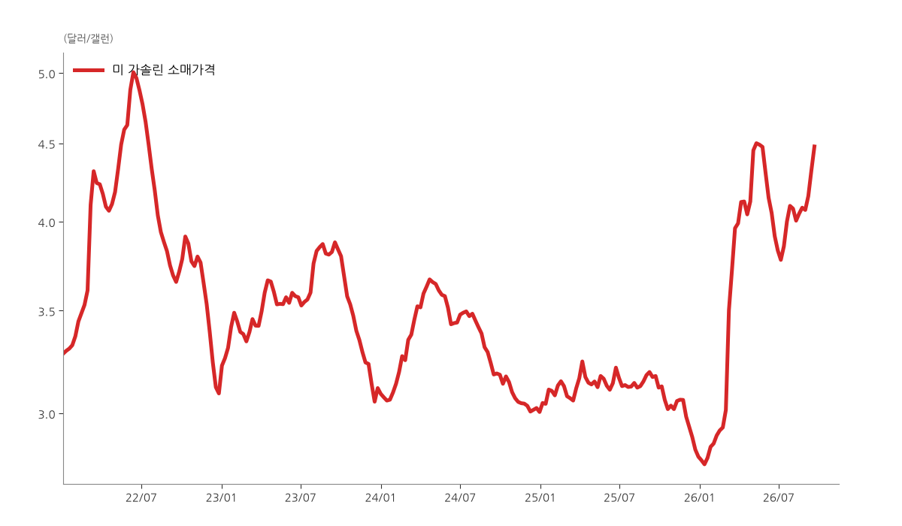

🦉 Owl Capital 아침 브리핑
2026년 9월 26일 (토) 오전 6시 기준
시장 심리 (공포·탐욕 지수)
37공포
극단적 공포 0100 극단적 탐욕
전일 36에서 37로 소폭 올랐지만 여전히 공포 구간. 1주 전 30 / 1개월 전 59 / 1년 전 50.
미국 휘발유 소매가격

9월 21일 기준 갤런당 $4.48, 전주 대비 +3.7%. 8월 말 이후 4주 연속 상승.
구독 블로그 새 글
- 절대 가서는 안 되는 길.
알바트로스의 파생 이야기 — 달러 선물을 떨어질 때마다 물타기로 사 모으던 젊은 투자자의 사례로, 파산까지 갈 수 있는 포지션의 위험을 짚는다. - 주절주절...첫 차 이야기등
메르의 블로그 — 첫 차 그랜저와 강릉 여행 등 차에 얽힌 추억을 가볍게 풀어놓은 잡담 글. - 미국국채 10년물이 5.2%를 찍는 이유?
메르의 블로그 — 9월 23일 미 5년물 입찰 부진(낙찰 5.033%, 테일 3.1bp)을 계기로 국채금리 급등 배경을 정리. - [오늘의 차트] AI '뮤즈' 날개 달고 30% 급등한 메타... 위기마다 반등 성공한 저커버그의 저력
피우스의 책도둑 & 매거진 — 9월 초 이후 30% 넘게 오른 메타 주가 반등을 다룬 야후파이낸스 '오늘의 차트' 번역. - [스펜서 자캅] AI와 소셜 미디어로 정교해진 주가 조작, 이제 투자자 스스로 방어해야 할 때
피우스의 책도둑 & 매거진 — 소셜미디어와 AI로 정교해진 초소형주 '펌프 앤 덤프'를 다룬 WSJ 스펜서 자캅 뉴스레터 번역. - 미·중 정상만찬에 집결한 미국 빅테크 CEO들... 반도체·AI 안전 등 주요 현안 논의
피우스의 책도둑 & 매거진 — 트럼프·시진핑 백악관 만찬에 모인 빅테크 CEO들과 반도체·AI 안전 논의를 다룬 비즈니스인사이더 번역. - "내 몫의 나랏빚은 얼마?"…1인당 정부 부채로 본 글로벌 경제
피우스의 책도둑 & 매거진 — 1인당 정부 부채가 많은 나라 순위를 정리한 비주얼캐피털리스트 번역. - 워런 버핏의 작별 서한: "시간은 언제나 승리한다"와 복리의 마법
피우스의 책도둑 & 매거진 — 이사회 의장직에서 물러나는 버핏의 마지막 메시지와 복리의 힘을 다룬 모틀리풀 번역. - 엔비디아의 파격적 배당 인상이 주목시킨 '배당 성장주'의 재발견
피우스의 책도둑 & 매거진 — 분기 배당을 주당 $0.01에서 $0.25로 올린 엔비디아와 배당 성장주 재조명을 다룬 모닝스타 번역. - 중국 제조업의 화려한 진화: 첨단 자동화와 글로벌 경제 파동
피우스의 책도둑 & 매거진 — 저가 생산에서 첨단 자동화로 옮겨간 중국 제조업을 다룬 워싱턴포스트 번역. - [낙관론자의 승리] "꿈을 미루지 마라": 쇼생크 탈출 뒤에 숨겨진 또 하나의 감동 실화
피우스의 책도둑 & 매거진 — 쇼생크 탈출 감독 프랭크 다라본트의 삶을 다룬 빌 머피 주니어 칼럼 번역. - 월스트리트 황금률의 경고: "주식, 무작정 오랫동안 들고 있지 마라"
피우스의 책도둑 & 매거진 — 단기 옵션·레버리지 ETF 급증과 빅테크 쏠림 속 바이 앤 홀드 전략의 한계를 다룬 마켓워치 번역. - 로빈후드위 최고 중개 책임자 말하는 투자자들의 3가지 실수와 해결 방법
피우스의 책도둑 & 매거진 — 투자 계획을 지키지 않는 것 등 로빈후드 임원이 꼽은 투자자의 3가지 실수를 다룬 마켓츠인사이더 번역. - 빅테크 쏠림이 만든 착시... 미국 대형주 '마이너스 베타' 종목 급증의 의미
피우스의 책도둑 & 매거진 — S&P 500 종목 절반이 시장과 반대로 움직이는 '마이너스 베타' 현상을 다룬 FT 알파빌 번역. - [마크 헐버트] 이론과 다른 현실 시장: 저베타 전략을 유지하되 '이 한 주'만 고베타에 베팅하라
피우스의 책도둑 & 매거진 — 고베타 종목 베팅은 10월 중순까지 기다리라는 마크 헐버트의 마켓워치 칼럼 번역. - [스펜서 자캅] 워런 버핏도 다시는 버핏처럼 투자할 수 없는 이유... 성공이 만드는 규모의 한계
피우스의 책도둑 & 매거진 — 규모의 한계 탓에 버핏 본인도 초기 방식으로 다시 투자할 수 없다는 WSJ 스펜서 자캅 뉴스레터 번역. - [오늘의 차트] 미 30년 만기 국채 금리 2004년 이후 최고... 주식 시장에 미칠 영향은?
피우스의 책도둑 & 매거진 — 2004년 이후 최고치를 찍은 미 30년물 금리와 증시 영향을 다룬 야후파이낸스 '오늘의 차트' 번역. - 비싸더라도 정말 수준 높은 제품을 만들어야 한다 - a16z 어니쉬 아차리야
"퀄리티"를 찾아서 — AI 제품의 고객획득비용을 일종의 보조금으로 보는 a16z 어니쉬 아차리야의 인터뷰 번역. - macro daily_2026.09.28
Rafiki Research — 연휴 중 MSCI Korea ETF 1.0% 하락, 미 10년물 5% 상회, 미중 정상회담은 무역휴전 2개월 연장에 그침.